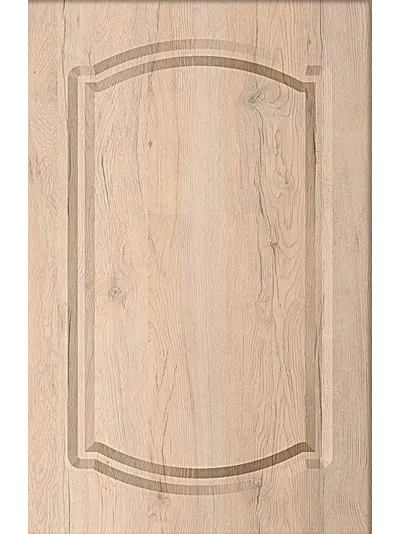

Как читать техкарту фрезеровки
Частая ошибка при первом заказе — взять размеры «как у соседней модели». Лимиты у каждой фрезеровки свои, и деталь вне лимитов на производство не уходит.

Почему таблица одна на всех не работает
Глубина и рисунок фрезеровки съедают часть плиты. У «Сканди» отступ рисунка от края — 50 мм, у «Колизея» — 25 мм, у «Арки» — 59 мм. Из-за этого минимальные размеры детали у моделей разные, а у витрины к этому добавляется ширина рамки под стекло.
Поэтому в каталоге у каждой из 79 фрезеровок лежит своя техкарта, а не общая справка.
Что в техкарте написано
Возьмём «Сканди» — самую ходовую современную фрезеровку:
| Глухой фасад | высота 246–2500 мм, ширина 246–1200 мм |
|---|---|
| Витрина | высота 246–2200 мм, ширина 246–1100 мм |
| Фасад ящика | высота 136–245 мм, ширина 246–1100 мм |
| Толщина | 16 мм по умолчанию |
| Кромка | R3 |
| Отступ фрезеровки | 50 мм |
| Ширина фрезеровки | 13 мм |
| Рамка витрины | 63 мм |
Три типа детали — три набора лимитов
Обратите внимание на ящик: его высота ограничена сверху 245 мм, а глухой фасад с этой отметки только начинается. Это не опечатка — детали ниже 246 мм фрезеруются как ящики, выше — как фасады.
Кромка
У большинства фрезеровок каталога кромка R3. Встречаются R4 и Rmin — это указано в техкарте конкретной модели, отдельно заказывать не нужно.
Рамка витрины
Ширина рамки под стекло — от 63 мм и зависит от рисунка: у «Колизея» это 54 мм, у «Арки» — 64 мм. От неё считается световой проём, поэтому её стоит взять из техкарты до того, как стекольщик получит размеры.
Как это работает в кабинете
В кабинете партнёра проверять числа руками не нужно: при выборе фрезеровки лимиты подставляются автоматически, а позиция вне допуска подсвечивается прямо в спецификации — до отправки заказа менеджеру.
Если нужного рисунка в каталоге нет или требуется правка существующего — «без лучей», «без полос» — это согласовывается с менеджером, и в техкарту вашего заказа вносится изменение.
← Все материалы